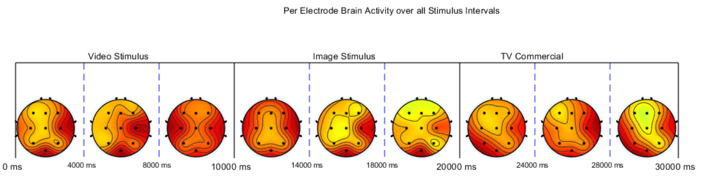
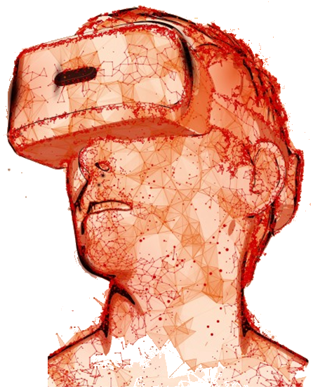

Forschungsprojekte
- Prefect - Entwicklung von Machine Learning Modellen zur Bestimmung regionaler Ernährungsunsicherheit
am Horn von Afrika
PREFECT - Projektseite
Hungerkatastrophen sind in den meisten Fällen auf eine Kombination verschiedener Indikatoren zurückzuführen, wie z.B. schlechte Umweltbedingungen, Ernteausfälle oder von Menschen verursachte Einflüsse wie Korruption oder bewaffnete Konflikte. Ziel des Projekts ist die Entwicklung eines mathematischen Prognosemodells, das die Wahrscheinlichkeit einer Hungersnot derart berechnet, dass eine angemessene Katastrophenhilfe so weit wie möglich sichergestellt werden kann, bevor eine Notsituation eintritt.
- AdAnalyser - Entwicklung eines Softwarepakets zur Analyse psycho-physiologischer Reaktionen auf (Werbe-)reize
AdAnalyser - Projektseite AdAnalyser - GitHub Repository

Die auf Matlab basierende Software AdAnalyser analysiert EEG-, HRV- und EDA-Daten. Die Software liest aufgenommene Signalzeitreihen ein, transformiert, analysiert und visualisiert diese. Als Ergebnisse werden eine Vielzahl von Analysecharts ausgegeben, die eine Korrelation zwischen appliziertem Reiz(en) und zerebralen wie vegetativen Reaktionen erlauben.
- iLab – Aufbau eines Labors für interaktive Benutzerstudien und Beobachtungsforschung
iLab Projektseite
Das iLab besteht aus einem Zwei-Raum-Laboraufbau mit einer breiten Palette von Eyetracking (iMotion + Tobii Plattform) und psycho-physiologische Sensoren (wie EEG, EKG, Atmung) zur Durchführung von Benutzerbeobachtungen, Rezeptionsstudien und Prototypentests.
- XR in DE - Cross Reality Branche in Deutschland
Cross Reality (XR) Projektseite
Ziel des Projekts ist die Erhebung der XR-Branche in Deutschland und die Analyse der wirtschaftlichen Kerntreiber. Unter anderem wird der Geschäftsklimaindex der Branche bestimmt und Clustereffekte bei den Standorten analysiert. Die Studie wird im Auftrag des Mediennetzwerks NRW seit 2017 jährlich durchgeführt (Fokus auf NRW) und seit 2020 deutschlandweit erhoben.